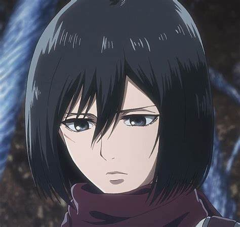
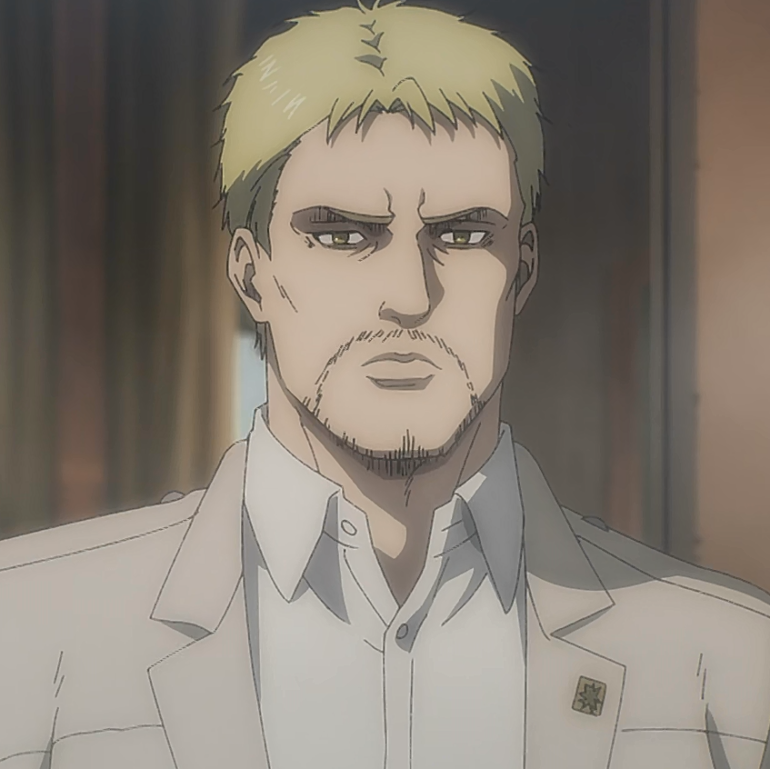

History :
"Attack on Titan," also known as "Shingeki no Kyojin" in Japanese, is a groundbreaking and internationally acclaimed manga and anime series created by Hajime Isayama. Set in a world where humanity is on the brink of extinction due to enormous humanoid creatures known as Titans that devour humans, "Attack on Titan" explores themes of survival, freedom, and the consequences of war. At the heart of the story are the three main characters: Eren Yeager, Mikasa Ackerman, and Armin Arlert. Eren, the protagonist, harbors a deep desire for revenge against the Titans after his hometown is destroyed, while Mikasa and Armin join him on a quest to uncover the mysteries of the Titans and reclaim humanity's freedom
Main Character :
 |
 |  | ||
 |
||||
Eren Yeager :
Eren Yeager, the central character of "Attack on Titan," is a figure whose journey embodies the essence of the series' epic narrative. Introduced as a determined and spirited young boy living within the walled city of Paradis, Eren's life takes a drastic turn when his hometown is decimated by the Titans, grotesque humanoid creatures with an insatiable appetite for humans. Fueled by a burning desire for vengeance and an unwavering commitment to protecting humanity, Eren joins the military and dedicates his life to eradicating the Titans that threaten their existence. What makes Eren an intriguing character is his transformation throughout the series. Over time, he evolves from a fiery and headstrong youth into a complex and morally ambiguous protagonist. His unwavering resolve to achieve freedom for humanity propels the plot forward, often at great personal cost. Eren's character arc delves deep into themes of sacrifice, the consequences of power, and the price of seeking vengeance.
Mikasa Ackerman :
Mikasa Ackerman, one of the central characters in "Attack on Titan," is a multifaceted and compelling figure whose strength and loyalty define her character. Introduced as a young girl who witnesses the traumatic loss of her parents during a Titan attack, Mikasa's life becomes inextricably intertwined with Eren Yeager, her adoptive brother and the series' protagonist. From that moment, her existence is dedicated to protecting Eren and ensuring his safety in a world besieged by Titans. What makes Mikasa a standout character is her unwavering devotion to Eren and her remarkable combat skills, making her one of the most formidable soldiers within the Survey Corps. Her stoic demeanor and proficiency in battle are contrasted by her deep emotional attachment to Eren, which drives her character's development. Mikasa's journey explores themes of identity, survival, and the complexities of human relationships.
Armin Arlert :
Armin Arlert, a key character in "Attack on Titan," embodies the power of intellect and the evolution of inner strength. Introduced as a timid and sensitive boy in the early stages of the series, Armin's character undergoes a remarkable transformation that mirrors his growth from vulnerability to remarkable resilience. As one of Eren Yeager's closest friends and a member of the Survey Corps, Armin brings a unique perspective to the battle against the Titans. What sets Armin apart is his exceptional intelligence and strategic thinking. He often serves as the group's strategic planner, relying on his analytical skills to navigate complex situations. Armin's contribution to the survival of humanity goes beyond physical prowess; he embodies the idea that knowledge and intellect can be potent weapons against seemingly insurmountable challenges.
Reiner Braun :
Reiner Braun, a pivotal character in "Attack on Titan," is a complex and enigmatic figure who embodies the moral ambiguities of the series. Introduced as a loyal and steadfast member of the Survey Corps, Reiner is initially seen as a steadfast ally in humanity's struggle against the Titans. However, as the narrative unfolds, it becomes clear that he harbors a significant secret—one that has the potential to shatter the very foundations of the world they live in. What makes Reiner a compelling character is his internal conflict and the weight of his dual identity. Beneath the façade of a courageous soldier lies the truth that he is also the Armored Titan, one of the colossal humanoid creatures responsible for humanity's suffering. This internal struggle between his loyalty to his comrades and his allegiance to the enemy Titans serves as a central theme in his character arc.
levi Ackerman :
Levi Ackerman, often referred to simply as "Captain Levi," is a standout character in "Attack on Titan" renowned for his exceptional combat prowess, unwavering dedication to humanity, and stoic demeanor. As the leader of the elite Special Operations Squad within the Survey Corps, Levi plays a critical role in humanity's ongoing battle against the Titans. What sets Levi apart is his unmatched skill in combat, earning him the reputation as humanity's strongest soldier. He is a master of the Vertical Maneuvering Equipment, allowing him to swiftly navigate the battlefield and dispatch Titans with precision. Despite his incredible abilities, Levi is characterized by his humility and his commitment to protecting his comrades at all costs.
Hange Zoe :
Hange Zoë, a captivating character in "Attack on Titan," stands out for their eccentricity, intelligence, and unwavering curiosity about the mysteries of the Titans. Serving as the Squad Leader of the Scout Regiment's Fourth Squad, Hange is known for their unorthodox methods and relentless pursuit of knowledge. They are a true scientist at heart, with a keen interest in understanding the Titans, their origins, and the world they inhabit. What makes Hange a memorable character is their boundless enthusiasm for experimentation and discovery. Their eccentric behavior, wild hair, and unshakable determination to unveil the secrets of the Titans often provide moments of comic relief in the midst of the series' intense and dark narrative. However, beneath the eccentricity lies a profound dedication to humanity's survival and the unyielding pursuit of truth.
Mike Zacharius :
Mike Zacharius, often referred to as "Mike" by his comrades, is a character in "Attack on Titan" known for his exceptional skills as a soldier and his steadfast commitment to the Survey Corps. As a member of the elite Special Operations Squad, Mike stands out for his remarkable ability to navigate the battlefield and his unparalleled talent for tracking Titans. What makes Mike memorable is his role as a seasoned veteran within the Survey Corps. He is known for his calm and composed demeanor, even in the face of the terrifying Titans. His proficiency in combat, particularly his skill with the Vertical Maneuvering Equipment and his sharp instincts, earns him respect and admiration from his fellow soldiers
Beretholt :
A refugee from a remote mountain village, he lost his home to a Titan attack and longs to return there someday. He expresses admiration for Eren's conviction, stating that he intends to join the Military Police Brigade in order to be safe from the Titans. However, he is one of those that follows Eren into the Survey Corps
Zick :
Zeke Yeager, also known as the Beast Titan, is a pivotal character in "Attack on Titan," renowned for his strategic brilliance and complex motivations. Introduced as a mysterious figure with the ability to transform into a unique Beast Titan, Zeke initially appears to be an antagonist aligned with the Marleyan authorities, who oppress the people living within the Walls. What sets Zeke apart is his dual heritage, being part of both the Eldian and Marleyan worlds, which fuels his intricate character development. He serves as a bridge between these two worlds, using his position and intelligence to navigate the political landscape and pursue his vision of a world free from the Titans' curse.
Grisha Yeager :
Grisha Yeager, the father of Eren Yeager and a key character in "Attack on Titan," is a figure whose backstory and actions shape the very core of the series' narrative. Introduced as a compassionate and dedicated doctor within the walled society of Paradis, Grisha's life takes a dramatic turn when he discovers the truth about the world beyond the Walls and the oppressive Marleyan regime. What makes Grisha a compelling character is his unwavering commitment to fighting for the freedom of his people, the Eldians, who are oppressed and persecuted by the Marleyan authorities. Grisha's transformation from a loving father and healer into a member of the secretive Eldian Restorationists highlights the sacrifices and moral complexities of his mission. Throughout the series, Grisha's character explores themes of resilience, sacrifice, and the lengths to which one is willing to go